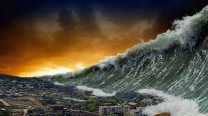
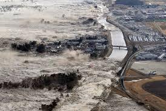

TSUNAMI
A tsunami (from Japanese: 津波, "harbour wave"; English pronunciation: /suːˈnɑːmi/ soo-NAH-mee) or tidal wave, also known as a seismic sea wave, is a series of waves in a water body caused by the displacement of a large volume of water, generally in an ocean or a large lake. Earthquakes, volcanic eruptions and other underwater explosions (including detonations of underwater nuclear devices), landslides, glacier calvings, meteorite impacts and other disturbances above or below water all have the potential to generate a tsunami. Unlike normal ocean waves, which are generated by wind, or tides, which are generated by the gravitational pull of the Moon and the Sun, a tsunami is generated by the displacement of water.
 Tsunami waves do not resemble normal undersea currents or sea waves because their wavelength is far longer.Rather than appearing as a breaking wave, a tsunami may instead initially resemble a rapidly rising tide.[citation needed] For this reason, it is often referred to as a "tidal wave", although this usage is not favoured by the scientific community because it might give the false impression of a causal relationship between tides and tsunamis.
Drawback
All waves have a positive and negative peak; that is, a ridge and a trough. In the case of a propagating wave like a tsunami, either may be the first to arrive. If the first part to arrive at the shore is the ridge, a massive breaking wave or sudden flooding will be the first effect noticed on land. However, if the first part to arrive is a trough, a drawback will occur as the shoreline recedes dramatically, exposing normally submerged areas. The drawback can exceed hundreds of metres, and people unaware of the danger sometimes remain near the shore to satisfy their curiosity or to collect fish from the exposed seabed.
A typical wave period for a damaging tsunami is about twelve minutes. Thus, the sea recedes in the drawback phase, with areas well below sea level exposed after three minutes. For the next six minutes, the wave trough builds into a ridge which may flood the coast, and destruction ensues. During the next six minutes, the wave changes from a ridge to a trough, and the flood waters recede in a second drawback. Victims and debris may be swept into the ocean. The process repeats with succeeding waves.
Prediction
Drawbacks can serve as a brief warning. People who observe drawback (many survivors report an accompanying sucking sound), can survive only if they immediately run for high ground or seek the upper floors of nearby buildings. In 2004, ten-year-old Tilly Smith of Surrey, England, was on Maikhao beach in Phuket, Thailand with her parents and sister, and having learned about tsunamis recently in school, told her family that a tsunami might be imminent. Her parents warned others minutes before the wave arrived, saving dozens of lives. She credited her geography teacher, Andrew Kearney.
A tsunami cannot be precisely predicted, even if the magnitude and location of an earthquake is known. Geologists, oceanographers, and seismologists analyse each earthquake and based on many factors may or may not issue a tsunami warning. However, there are some warning signs of an impending tsunami, and automated systems can provide warnings immediately after an earthquake in time to save lives. One of the most successful systems uses bottom pressure sensors, attached to buoys, which constantly monitor the pressure of the overlying water column.
Mitigation
In some tsunami-prone countries, earthquake engineering measures have been taken to reduce the damage caused onshore. Japan, where tsunami science and response measures first began following a disaster in 1896, has produced ever-more elaborate countermeasures and response plans.The country has built many tsunami walls of up to 12 metres (39 ft) high to protect populated coastal areas. Other localities have built floodgates of up to 15.5 metres (51 ft) high and channels to redirect the water from an incoming tsunami. However, their effectiveness has been questioned, as tsunami often overtop the barriers.